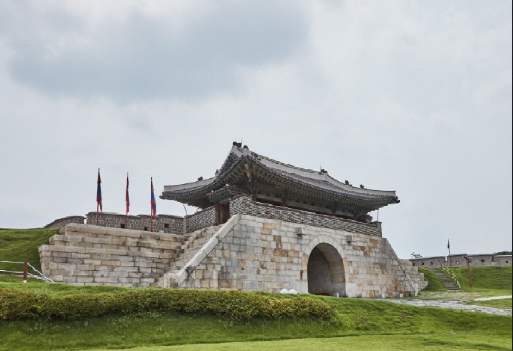
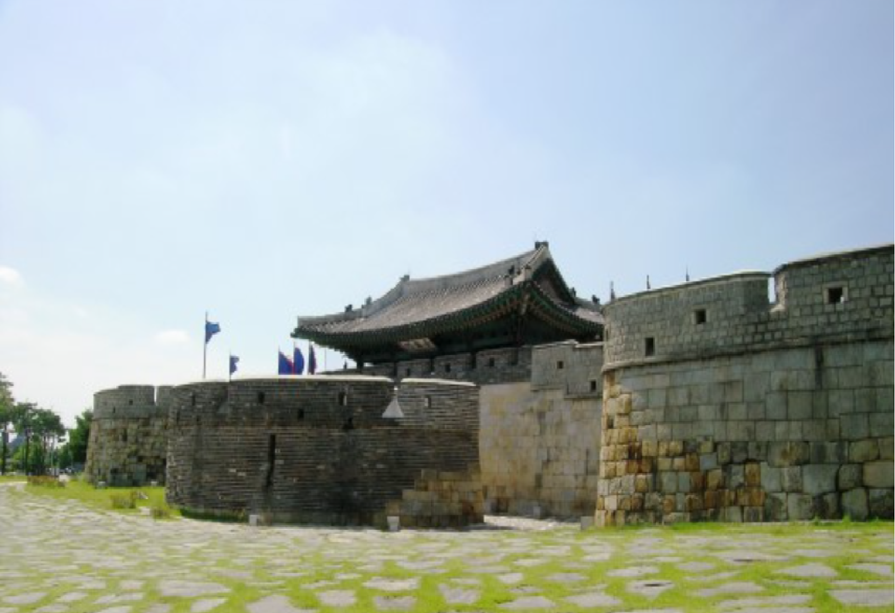

창룡문
- 수원 화성 창룡문
- 창룡문은 화성의 동문으로 1795년(정조 19) 건립하였다. 건축양식은 돌로 쌓은 홍예문 위에
단층문루를 세우고 밖으로는 성문을 보호하기 위하여 한쪽이 열려 있는 옹성을 쌓은 구조이다. 이후 6·25전쟁으로
문루와 홍예가 크게 소실되었으나 1975년 다시 옛 모습으로 복원하였다. 안팎으로 홍예를 설치하였는데, 홍예의 규모가 서로 달라
내홍예는 높이 4.8m이고, 외홍예는 4.5m이다. 문루는 6칸 규모로 내외 3포에 이익공(二翼工) 건물이다. 창룡문의 외성인 동옹성은
높이 2.9m, 둘레 17.2m이며 가까운 곳과 먼 곳을 겨냥할 수 있는 총안 14개가 나 있다.

창룡문
- 수원 화성 창룡문
- 창룡문은 수원 화성의 동문이다. 창蒼은 푸른색을 가리키므로 ‘동쪽 방향을 지키는 신령한 청룡’을 상징한다.
창룡문은 바깥쪽에서 보면 안쪽으로 휘어 들어가는 곳에 자리 잡고 있어, 돌출된 좌우 성벽이 자연스럽게 성문을 보호하는 치성 역할을 한다.
문 안쪽의 넓은 공터는 군사들의 훈련장으로 쓰였다.조선 시대 건축에는 일정한 위계질서가 있다. 같은 성문이지만 장안문과 팔달문은 높은 격식을 갖춘 반면
창룡문과 화서문은 한 단계 격을 낮춘 형태이다.

창룡문
- 수원 화성 창룡문
- 장안문과 팔달문이 2층 문루에 우진각 지붕인 반면 창룡문과 화서문은 1층 문루에 팔작지붕이다.
옹성은 서울의 흥인지문처럼 한쪽 모서리를 열어둔 형태다. 창룡문 옹성 안 석축에는 공사를 담당한 감독관과 석공 우두머리 이름을 새긴 실명판이 잘 남아 있다.
한국 전쟁 때 문루가 파괴되어 1976년에 복원했다. 치성이란 성벽 일부를 돌출시켜 적을 감시하고 공격할 수 있도록 만든 시설이고,
옹성은 성을 지키기 위하여 성문 밖에 쌓은 작은 성이다.